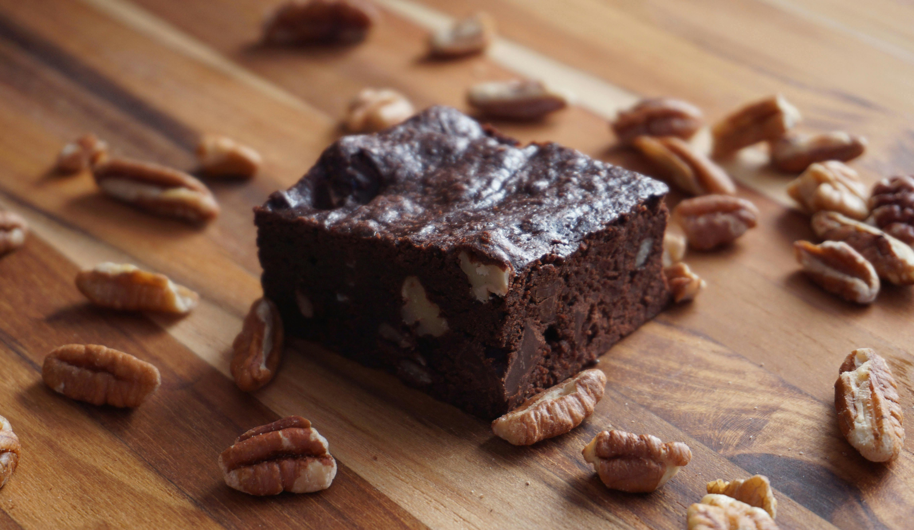

Home
Brownies

Description
Brownies are a rich chocolate dessert with a dense, fudgy or slightly cake-like texture. They are made from simple ingredients like chocolate, butter, sugar, eggs, and flour, often with added nuts or chocolate chips.
They are baked in a pan and cut into squares, making them easy to serve. Brownies can be enjoyed on their own or paired with ice cream or other toppings for a more indulgent treat.
Ingredients
- Chocolate
- Butter
- Sugar
- Eggs
- Flour
Steps
- Prepare the ingredients
| Measure all ingredients, chop chocolate if needed, and preheat the oven
- Mix wet ingredients
| Melt butter and chocolate, then stir in sugar, eggs, and vanilla until smooth
- Add dry ingredients
| Mix in flour, cocoa powder, and salt until just combined
- Add extras
| Fold in nuts or chocolate chips if using
- Bake
| Pour batter into a lined pan and bake until the center is set but still slightly fudgy
- Cool and serve
| Let brownies cool, then cut into squares and serve